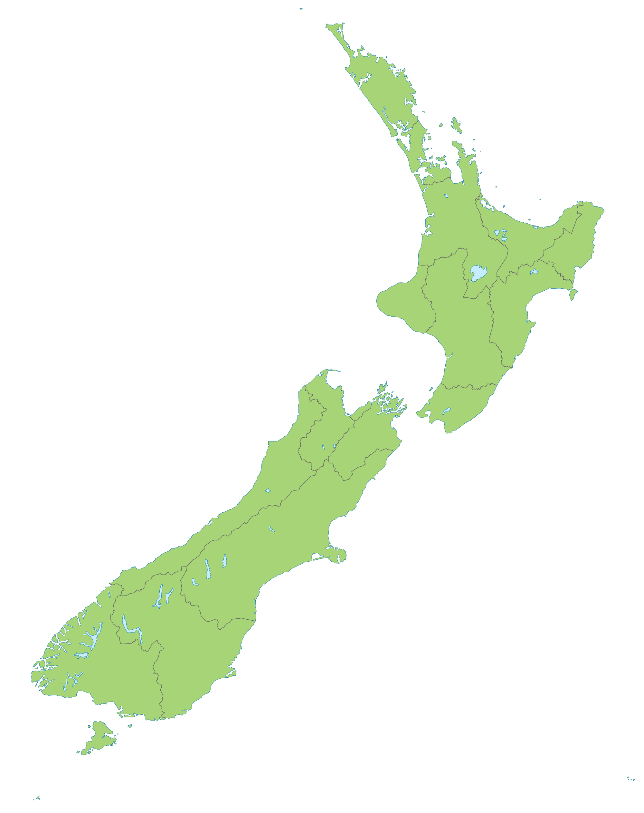

<!DOCTYPE html>
<html lang="pt-br"></html>
<head>
<title>Sobre a NZ</title>
<meta charset="UTF-8">
<meta name="viewport" content="width=device-width, initial-scale=1">
<link href="https://fonts.googleapis.com/css?family=Raleway&display=swap" rel="stylesheet">
<link rel="stylesheet" type="text/css" href="TesteNZv3.css">

</head>
<body>

        <ul class="topnav">
                <li class="left"><a href="index.html">New Zealand</a></li>
                <li><a href="Sobrev3.html">Sobre</a></li>
                <li><a href="Cidadesv3.html">Cidades</a></li>
                <li><a href="index.html">Home</a></li>        
        </ul>


<div class="header2">
  
</div>

    <div>
        <ul class="breadcrumb">
            <div class="margem">
            <li><a href="index.html">Home</a></li>
            <li>Sobre</li>
            </div>
        </ul>
    </div>

<div class="row">
    <div class="main">
        <h1>Sobre</h1>
        <p class="texto">
                A Nova Zelândia é um país formado por duas grandes ilhas: Ilha do Norte e Ilha do Sul, que são separadas pelo estreito de Cook. 
                Esses dois territórios estão localizados no sul da Oceania, sendo considerados como parte da Polinésia.</p>

                <p class="texto">
                A maioria da população está concentrada na Ilha do Norte, pois essa porção do território apresenta características físicas mais propícias
                 para a habitação. Cortada por uma cadeia montanhosa, os Alpes do Sul, a Ilha do Sul é chamada pela população nativa de Aotearoa 
                 (terra da longa nuvem branca).</p>
                 <p class="texto">
                Antiga colônia britânica, a Nova Zelândia tem o povo Maori como o primeiro a habitar o seu território. Devido a sua importância, é 
                comum encontrar referências à sua cultura em diversas cidades, além do Te Reo Māori ser uma das línguas oficiais, seus tesouros e 
                arquitetura contrastando com as influências europeias.</p>
                <p class="texto"></p>
                Os neozelandeses são conhecidos por serem receptivos, bem-humorados, educados e amantes da natureza, características herdadas dos Maori. 
                Entretanto, em muitos locais, a principal referência à essa cultura é o Haka – um tipo de dança de guerra feita por esse povo,
                 demonstrando orgulho, força e união.
            </p>
     </div>

    <div class="side">
        
    </div>
</div>
    <br>
    <br>
    <br>
    <br>
    <br>
    <div class="footer">
        
    </div>

</body>
</html>
